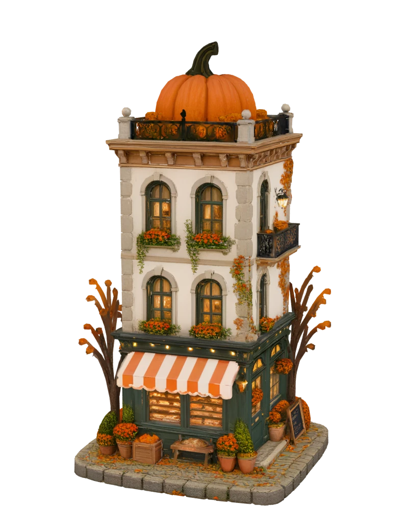

Little Storefronts by Borealbit
Open the storefront → · Credits and artwork terms

Extract the entire ZIP. Keep all files together. A static HTTP server is the verified preview path: run python3 -m http.server 8000 in this folder and open http://localhost:8000. Direct double-click/file:// behavior needs manual checking in your browser.
Edit shop-config.js in a plain-text editor, save and refresh. You can change the shop name, subtitle, tagline, hours, three hero lines, story paragraphs, four existing menu entries and optional external HTTPS ordering link. Keep valid JavaScript syntax and the original product IDs. Prices are numeric USD values without a dollar sign.
Photos live in assets/photos/. Replace them with the same filename or update configured menu image paths. Website branding does not change signs baked into model textures. The seven 3D models are embedded in assets/model-data.js. Duplicate standalone GLBs are omitted to keep downloads smaller. Model changes need a new export.
Browse products, rotate the scene, switch Day/Evening/System and use illustration mode. Interactive 3D requires WebGL2. Favorites, bags and receipts are local demonstrations: no real orders or payments are sent. An external ordering link is independent of the demo bag.
Upload this complete folder to a static web host, preserving relative paths. No Node installation, build command, API key or server function is required.
Read ASSET_LICENSE.md for artwork scope and licenses/ for third-party runtime/font notices. See the repository for English and Chinese documentation.